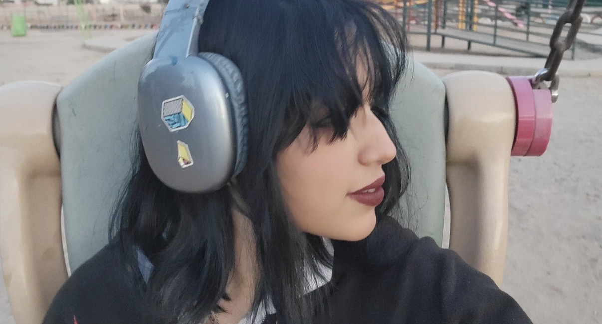
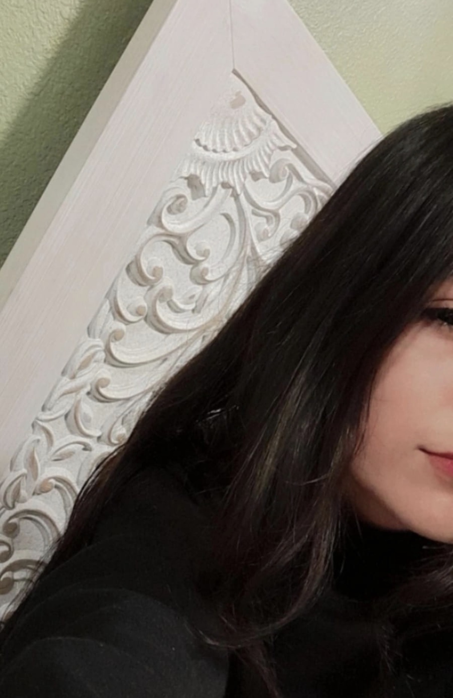

Estos son mis amigas, las cuales me han ayudado en esta escuela y lo dificil que fue para mi el gran cambio de escuela, ya que estan muy retiradas y no conocia a nadie, ademas que ya todos tenian a su grupito formado pero me hicieron sentir querida y que no importa que sea "la nueva", era posible comenzar de nuevo y con mejores momentos y compañia.

Ella fue la primera persona con la que hable en esta escuela, recuerdo que entre un martes, las primeras clases fueron lo peor, me senté hasta enfrente y no sabia nada, salia a conocer la escuela y terminaba llolrando porque ese no era mi espacio, me sentia fuera de lugar y rara hasta que en una clase tuve la valentia de agarrar mis cosas e irme hasta atras y ahi estaba ella, era una niña solitaria, de u n estilo peculiar pero me atreví a preguntarle "¿ El asiento de atras esta ocupado?" y asi empezo todo, primero me la pasaba en el salón ya que ella tgenia amigas pero en clase de ecosistemas se ole acabó la bateria del celular y lo puso a cargar pero cuando se sentó, se volteó y me dijo "Vamos a amigar" y yo deje el telefono, sonreí y dije "muy bien", y desde ese momento se volió mi mejor amiga y la que me ha apoyado en todo, ayudadome cada vez que estoy en un problema o no me siento bien y tambien fue la que mas me apoyo cuando mi persona favorita ( mi papá) falleció y fue lo peor de todo, ella siempre esta ahi para mi y se que siempre lo estará y la amo mas que a nada en el mundo ahora y se que ella tamnbien a mi.

Ella fue mi otro pilar, la conolcí despues ya que era medio callada conmigo pero poco a poco se fue ganando mi confianza y mi cariño. A ella la conocí por amogos en común pero desde que la vi supe quew era amable, bonita y buena amiga, aunque antes pensaba que era muy nerd y callada termino siendo lo contrario y eso me gustó aun mas. Ahora ella es una de mis amigas mas presiadas y la cual no se que haria sin ella, la quiero mucho y espero y dure mucho.
Volver al inicio